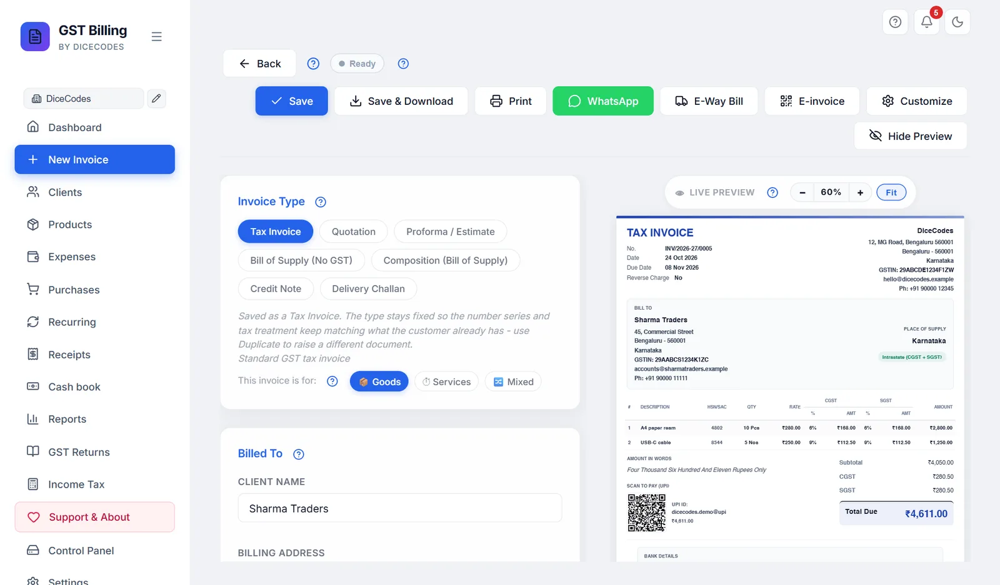
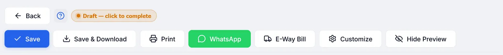
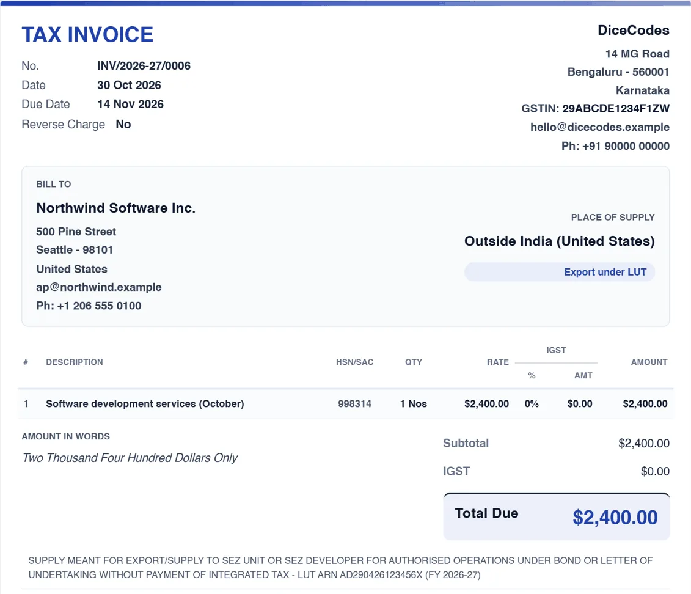
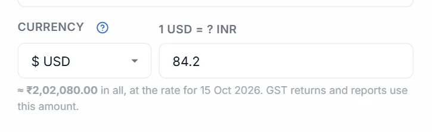

Making an invoice
Every card of the New Invoice screen, from top to bottom: the toolbar, the document type, the client, invoice details, ship-to and order details, the items, discounts, GST, TDS and TCS, terms, extra pages, and what happens when you save, print or share.
#How the screen is laid out
Open it with New Invoice in the sidebar, or Ctrl + N. The same screen opens when you edit, duplicate or convert an invoice from the Dashboard. The form is on the left and a live preview of the printed invoice is on the right. From top to bottom, the form has these cards:
- Invoice Type: the kind of document, and whether it is for goods or services. The Customize panel opens inside this card.
- Billed To: the client's name, address, state and GSTIN.
- Invoice Details: number, dates, place of supply, the Ship to address and the optional order, dispatch and reference details.
- Line Items: what you are selling, with the whole-bill discount under them.
- Terms & Conditions: terms, notes for the client and a private note for you.
- Additional Pages / Sections: extra pages printed after the invoice.
The totals are not typed anywhere. They are worked out as you type and shown in the live preview.
Every card title has a small ? next to it. It opens this guide at the part about that card.

#The toolbar
The toolbar stays at the top of the screen as you scroll, so Save, Print and the rest are always in reach on a long invoice.

| Button | What it does |
|---|---|
| ← Back | Leaves the invoice. If you have changed something that is not saved, you are asked first (see Leaving with unsaved changes). |
| ? | Opens this guide. |
| Save status | A small coloured badge that tells you whether the invoice is saved. See Saving as you go. |
| Save | Saves the invoice without making a PDF. Ctrl + S does the same. |
| Save & Download | Saves the invoice and downloads the PDF. See Save & Download. |
| Saves the invoice, then prints it. See Printing. | |
| Opens WhatsApp with the invoice details typed in. See Sending on WhatsApp. | |
| E-Way Bill | Only on tax invoices and delivery challans, and only while E-way bill is on in Settings, Features. Downloads the e-way bill file. See E-way bill. |
| E-invoice | Only when E-invoicing (IRN) is on in Settings, Features, and only on tax invoices and credit notes. Downloads the e-invoice file and takes back the IRN. A ✓ after the name means this invoice already has an IRN. See E-invoicing. |
| Customize | Opens the panel that controls what prints, the paper size, currency and more. While it is open the button reads Hide Options. See Customize: what prints and how. |
| Hide Preview | Hides the preview so the form uses the whole width, handy for long invoices. Show Preview brings it back. The app remembers your choice in this browser. Save & Download and Print still work while it is hidden. |
While a save, download or print is running, the buttons are greyed out and Save & Download reads Generating.... Wait for it to finish.
#Invoice Type: choosing the document
The chips at the top of the first card decide the printed title, the number series, whether GST is charged, and whether the document counts as a sale in your totals and GST returns. Hover over a chip to see a one-line description; the same line shows under the chips for the one you picked.
| Chip | Prints as | Numbered | Use it for | GST | Counts as a sale? |
|---|---|---|---|---|---|
| Tax Invoice | TAX INVOICE | INV… | A normal sale by a GST-registered business | Yes | Yes |
| Quotation | QUOTATION | QUO… | A priced offer for work or supply. Convert it to a tax invoice when the client accepts. | Shown | No |
| Proforma / Estimate | PROFORMA INVOICE | EST… | A quote before the sale. Prints "This is not a tax invoice" and a faint ESTIMATE watermark. | Shown | No |
| Bill of Supply (No GST) | BILL OF SUPPLY | BOS… | Exempt goods or services, where no GST is charged | No | Yes |
| Composition (Bill of Supply) | BILL OF SUPPLY | COMP… | Sales under the composition scheme (section 10). The declaration required by Rule 46A prints automatically. | No | Yes |
| Credit Note | CREDIT NOTE | CN… | Returns, a price cut after the sale, or a correction. Its total is subtracted from your sales. See How to make a credit note. | Yes | Subtracted |
| Delivery Challan | DELIVERY CHALLAN | DC… | Moving goods without a sale, such as to a job worker or on approval | No | No |
The prefixes above are the defaults. You can change each one in Settings, Invoice number format or Print Settings.
What changes when you click a chip
- The number moves to that type's own series. Any number you typed is replaced.
- The Tax % column is turned on for types with GST and off for the others (bill of supply, composition, delivery challan). Place of Supply is shown or hidden the same way.
- The title printed at the top changes, unless you typed your own Invoice Title.
Once an invoice is saved, its type is locked. The other chips are greyed out and a note under them says why: the number and the tax already issued to your client must not change. To make a different document from it, use Duplicate on the Dashboard. A quotation, proforma or challan is turned into an invoice with Convert to Tax Invoice (see Turning a quote into an invoice).
No GST box on the items, or no tax on a new tax invoice? The Tax % column is remembered for the next invoice. After making a bill of supply or a challan, the next new invoice can start without it. Click the Tax Invoice chip again, or tick Tax % column under Customize. See No GST is charged at all.
The chips are greyed out. The invoice is already saved. Use Duplicate to make a new document of another type.
#Goods, services or both
Under the type chips, This invoice is for: sets which units the Unit list offers and which unit a new row starts with. It does not change the tax.
| Chip | Units offered | Good for |
|---|---|---|
| 📦 Goods | Pcs, Nos, Kg, g, Tonne, Ltr, ml, Mtr, cm, Ft, In, Sq.ft, Sq.m, Box, Dozen, Pair, Set, Bag, Roll, Bottle and the like. The default. | Shops, traders, manufacturers |
| ⏱ Services | Hrs, Day, Week, Month, Year, Visit, Session, Project, Word, Page, plus Nos, Sq.ft and Sq.m. A reminder appears to use a SAC code (the services version of HSN) in the HSN/SAC box. Terms print in the Formatted layout unless you choose otherwise. | Freelancers, consultants, repair and service businesses |
| 🔀 Mixed | Every unit, unfiltered. | Selling goods and doing the work, such as supply and installation |
Your own custom units show in every mode. The choice is remembered for your next invoice.
A service with no quantity (a fixed fee). Keep the line's quantity at 1 and type the fee as the rate. Then click Customize and untick Qty column (see Items table): the invoice prints the item and its amount with no Qty column. Untick Rate column too if you want only the amount. Totals and GST do not change. The choice carries on to your next new invoices, so tick it again for an invoice that needs quantities; invoices already saved keep their own setting.
In Services mode the unit list starts with the units services use most: Hrs, Day, Month, Project and Nos. The HSN/SAC box of each line is labelled SAC, and the unit is not printed next to the quantity unless you turn it on (see Unit next to Qty).
A Services invoice shows only what services need. The Freelancer / consultant business type starts every invoice in Services mode. There, the screen leaves out:
- the Unit column, while the unit is not printed;
- the Delivery charges button;
- the Ship to box;
- the goods boxes under Order, dispatch & reference details (vehicle no, delivery note, dispatch, destination, terms of delivery). The PO number, service period and work details stay.
The Discount on a line is just an amount or a percent, and the discount on the whole bill is behind + Discount on the whole bill. Anything already filled in still shows. Click 📦 Goods or 🔀 Mixed to get every box back.
Long item names. The item box grows as you type, so a long name stays readable. Drag its bottom corner to make it taller. Press Enter to add the next row; a name stays on one line. Use + Add description for more detail under the item.
#Billed To: the client
This card says who the invoice is for. Their name, address, state and GSTIN print in the BILL TO block. The state matters most: it decides whether GST is charged as CGST + SGST or as IGST (see How GST is worked out).
| Field | What to enter |
|---|---|
| Client Name | Click it to see your saved clients, or type to search. Pick one to fill in everything below. You can also bill a name that is not saved. |
| Pencil button | Appears beside the name once a saved client is picked. Opens their full details for editing (see Adding and editing a client). Typing a different name unlinks the saved client and the pencil goes. |
| Billing Address | Street address and locality. |
| Country | India to start (your own country). Changing it clears the state, since each country has its own list. A client outside India makes the sale an export: see How GST is worked out. |
| City | For example Mumbai. |
| PIN Code | The 6-digit PIN. For other countries the label changes, such as ZIP Code or Postcode. |
| State | Pick from the list. Leave it blank if you enter a GSTIN: the app fills it in from the GSTIN (see What the GSTIN check tells you). Hidden when Business state is turned off under Customize. |
| GSTIN | The client's 15-character GST number, if they are registered. Optional: leave it blank for a consumer or an unregistered business (a B2C sale). Letters are made capitals for you. Hidden when Tax ID is turned off under Customize. |
The client's email, phone and SEZ setting are not on this card. They are kept with the saved client and edited with the pencil. A client marked SEZ is always charged IGST.
CGST + SGST where it should be IGST, or the other way round? Check the client's State and the Place of Supply, and your own state in Settings. See The invoice has the wrong tax split.
The client list does not open. You have no saved clients yet. Type the name and use Save "name" as new client, or add clients on the Clients screen.
#Picking a saved client, or saving a new one
- Click Client NameYour saved clients drop down, each with their city and state, and their GSTIN when they have one.
- Type to narrow the listAny part of the name works. Use ↓ ↑ to move and Enter to pick, or click one. Esc closes the list. Each row has its own pencil to edit that client straight away.
- Check what was filled inPicking a client fills in their address, country, city, PIN, state and GSTIN, and a message says Loaded client: name.
- Or save someone newType their name; at the bottom of the list click Save "name" as new client. The client form opens with what you have typed so far. Save it and the client is picked on this invoice and kept for next time. You do not have to: an invoice can go to a name that is not saved.
Client preferences. A saved client can carry their own paper size (a custom size too), currency and auto-print setting. When you pick them on a new invoice, those are applied. When you save an invoice for a saved client, the paper size and currency it used become that client's preference, so their next invoice starts the same way.
#What the GSTIN check tells you
When you leave the GSTIN box, the app reads the number. The first two digits are the state code, and the last character is a check character. This works offline, with no GST portal lookup.
| Message under the box | Meaning | What to do |
|---|---|---|
| ✓ Registered in state — state filled in. | The State was blank, so it has been filled in from the GSTIN. | Nothing. |
| ✓ Registered in state. | The GSTIN and the State agree. | Nothing. |
| ⚠ This GSTIN is registered in state, but the state says other state. | The two disagree. | Check which is right. The tax split follows the State and Place of Supply, not the GSTIN. |
| ⚠ This GSTIN fails its own checksum — check for a typo. | The check character does not add up, so a character is almost certainly mistyped (0 for O, 1 for I and so on). | Compare it with the client's GST certificate or their last invoice. |
These are warnings only. They never stop you saving. The message clears as soon as you type in the box again.
#Using a client's credit
If the client paid more than they owed on earlier invoices, a blue banner appears at the top of Billed To on a new invoice: 💳 Client has ₹… credit, with the invoices the overpayment came from.
- Choose how much to useType an amount in the box, or click Apply full to use as much as this invoice needs. It can never be more than the credit or the invoice total.
- Check the line under itIt says how much will be applied and how much credit will remain.
- SaveThe credit is recorded as a payment on this invoice, and taken off the invoices it came from. A message says which ones.
- Skip (shown once an amount is entered) sets it back to nothing.
- Tick Auto-apply available client credit on future invoices to have the credit used automatically whenever you pick a client who has some.
The banner does not show when editing a saved invoice. To see a client's credit and payments, open their account.
#Invoice Details
The number, the dates and where the supply happens. Under them are the Ship to box and the order, dispatch and reference details.
| Field | What to know |
|---|---|
| Invoice Number | Filled in with the next number for this type. It is only taken when you first save, so an invoice you abandon does not use up a number. If another invoice took it meanwhile, yours gets the next free number and you are told. You can also type your own number, such as the next page of a paper bill book: a number you type is kept. See Invoice number format. |
| Invoice Date | Today, unless you change it. A duplicated or converted invoice starts on today's date too. |
| Due Date | Blank unless you set it. Once it passes, an unpaid invoice shows as Overdue on the Dashboard. |
| Cost centre | Only when cost centres are turned on. Tags the sale to a branch, project or department for the By cost centre report. It is not printed. |
| Place of Supply | The state where the goods are delivered or the service is supplied. Leave it on Defaults to Client State unless that is a different state from the client's address. The tax split follows it. Not shown for bills of supply, composition bills or delivery challans, or when Place of Supply is turned off under Customize. |
| Original Invoice Reference | Credit notes only: the invoice it is against, such as INV/2025-26/0001. It prints as "Against Invoice". |
Changing the number of a saved invoice
You can edit the number of an invoice that is already saved. On the next save it moves to the new number, which must not be used by another invoice, and the copy under the old number goes to the Trash. An invoice whose overpayment was used as credit on another invoice cannot be renumbered; the app says so.
GSTR-1 accepts at most 16 characters (letters, digits, - and /) for tax invoice and credit note numbers. If yours is longer, a warning appears when you save. Shorten the format in Settings, Invoice Number Format.
"Invoice number ... already exists" or "was already used — saved as ... instead": see Invoice number already exists.
The number jumped, for example from 0007 to 0009: another invoice, a quotation of the same series or a restored backup used it. Numbers are only taken on save, never by opening the screen.
Under Due Date, the buttons 7 days, 15 days and 30 days set the due date that many days after the invoice date. If your business type is Freelancer, new invoices start due in 15 days.
The Currency box appears here when you bill abroad; see Billing in another currency.
#Exports and SEZ supplies under a LUT
When the client is abroad (its country is not India) or is an SEZ unit or developer (the SEZ tick on the client), a box appears in Invoice Details: Export under LUT (no IGST), or SEZ supply under LUT (no IGST).
- Ticked: the supply is zero-rated. No IGST (and no cess) is charged, the items keep their GST rate for the returns, and the total is the taxable value. The invoice prints, word for word, the declaration Rule 46 requires: SUPPLY MEANT FOR EXPORT/SUPPLY TO SEZ UNIT OR SEZ DEVELOPER FOR AUTHORISED OPERATIONS UNDER BOND OR LETTER OF UNDERTAKING WITHOUT PAYMENT OF INTEGRATED TAX - LUT ARN AD290426123456X (FY 2026-27). Every invoice design prints it, the thermal receipt too.
- Not ticked: IGST is charged ("with payment of IGST"), which you claim back later as a refund. The invoice prints the matching declaration …ON PAYMENT OF INTEGRATED TAX.

On a new invoice the box is ticked for you when your business has a LUT saved in Settings, Company for the financial year of the invoice date. Untick it to charge IGST instead. An invoice saved earlier keeps its own choice. The ARN and year are copied onto the invoice when you tick it, so a new LUT next year never changes an old invoice.
Under the box:
- Have a LUT? appears when no LUT is saved. It explains why to file one (no tax to pay and wait for), and links to how to file it (form GST RFD-11, free, once a financial year). You can still tick the box if you have a LUT and have not added it yet; the declaration then prints without the ARN.
- ⚠ Your saved LUT is for FY … appears when the saved LUT is for another year than the invoice date. File the new year's LUT and update Settings.
No LUT box? Then the app does not see this invoice as an export. A note says why, with a button to fix it:
- Export under LUT? First set the client's country. You are billing in a foreign currency, but the client is saved in India (the client form starts on India). Click Set the client's country and choose their country.
- Export under LUT? Place of supply is … The client is abroad, but Place of supply is an Indian state. Click Make it an export to set it back to Outside India (export).
- Export under LUT? GST is turned off on this invoice. The Tax % column tick in Customize switches GST off for the whole invoice, which hides the LUT too. Click Turn GST on; under the LUT the tax is still 0.
The tick also decides the GST returns and the e-invoice: SEZ invoices go in GSTR-1 as SEZ without payment (SEWOP) or with payment (SEWP), and the e-invoice file uses EXPWOP / SEZWOP or EXPWP / SEZWP. Exports abroad still go in Table 6A on the portal by hand, see the warnings above the tabs. The E-Way Bill file uses 0% rates under a LUT. More on export invoices: What to print on an export or SEZ invoice.
#Ship to: a different delivery address
Ship to same as bill-to address is ticked to start, so the invoice has only a BILL TO block. When the goods go somewhere else, such as a site, a warehouse or the client's customer, untick it and fill in:
| Field | What to enter |
|---|---|
| Shipping Address | The delivery address, warehouse or consignee location. Can run to two lines. |
| Shipping City | The delivery city. |
| Shipping PIN | The 6-digit delivery PIN. |
| Shipping State | The delivery state. Same as billing state leaves it as the client's state. |
The invoice then prints a separate SHIP TO block beside BILL TO.
CGST + SGST or IGST follows Place of Supply, not the shipping state. If the delivery is in another state, set Place of Supply too. For "bill to one party, ship to another" sales, ask your CA which state is the place of supply.
#Order, dispatch and reference details
At the bottom of Invoice Details, click Order, dispatch & reference details to open a set of optional boxes, the ones a Tally invoice carries. It shows how many are filled, and stays open on an invoice that has any of them.
| Box | For example |
|---|---|
| Work details | Supply and installation of high mast lights, scope as per annexure |
| Revision No | Rev-1, when you reissue a corrected quotation |
| Vehicle No | TS09AB1234 |
| Service period from / to | The period a service bill covers, such as a monthly AMC. A warning appears if the end is before the start. |
| Buyer's Order No and Order date | The client's purchase order (PO) or work order |
| Reference No & Date, Other references | Any other number your client wants quoted |
| Delivery Note and Delivery note date | The delivery challan or note that went with the goods |
| Dispatch Doc No, Dispatched through, Destination | LR or docket number, transporter such as VRL Logistics by road, and the destination town |
| Mode / Terms of payment | 30 days, NEFT |
| Terms of delivery | Ex-works, door delivery, FOR destination |
Only what you fill in prints. The Tally style design shows them in its reference boxes, Boxed grid prints Work details on its own line, and the other designs list them under Bill To.
#Scanning barcodes
With a barcode scanner, each scan adds a product to the invoice. Give your products their barcodes first: see Barcode on the Products page.
- Click Scan barcodeThe box at the top of Line Items.
- ScanThe product is added with its price, GST rate and unit. Scan the same product again and its quantity goes up by one; a different product gets its own row.
- Keep scanningThe cursor stays in the box, so you can scan the next item straight away.
- A code no product has shows No product has barcode … and adds nothing. Add the barcode to the product under Products, then scan again.
- Scanned into an Item box by mistake? That works too: the code is replaced by the product, and the cursor moves to the scan box.
- The box is hidden on an invoice for services.
Which scanners work
USB, Bluetooth and wireless (USB dongle) scanners all work when they are in keyboard mode (often called HID), which most are already. The app reads what the scanner types, so no driver or pairing inside the app is needed. If codes appear but nothing is added, check these settings in the scanner's manual (usually set by scanning a setup barcode):
- Mode: HID or keyboard, not SPP, BLE or serial. Those modes do not type, so no browser app can read them.
- Suffix: Enter (CR) or Tab after each code.
- Keyboard language: US English, so numbers and dashes come out right.
- No prefix: extra characters before the code (an AIM ID) stop it matching.
#Line Items
One row for each thing you are selling. The amount for each row and the totals are worked out for you and shown in the preview.
| Field | What to know |
|---|---|
| Item | The item name. Typing searches your products by name or HSN and shows up to five, with their HSN and price. Pick one with the mouse, or with ↓ ↑ and Enter. Picking fills in the HSN, selling price, unit and GST rate, and links the row to the product so its stock is counted. You can also type any name that is not a product. |
| HSN/SAC | The goods (HSN) or services (SAC) code. GST returns need it. For common codes the app knows the usual GST rate since 22 September 2025: from the fourth digit it shows the rate and the item type in green under the box, and if the row's GST is still 18% or 0% it is changed to match. Where the rate depends on the price, size or packing (clothes and shoes up to or above ₹2,500, cars and bikes by engine size, loose or packed food) it shows every possible rate and leaves your GST % alone. Always check it: see GST basics: what rate do I charge? Finding your code: see GST basics: HSN and SAC. |
| Qty | 1 to start. Clicking the box selects the number, so typing replaces it. Decimals are fine, such as 2.5 kg. |
| Unit | From the list for Goods, Services or Mixed. A new row starts with the unit of the row above. ＋ Add custom… adds your own unit (up to 20 characters), marked ★ and kept in this browser for later invoices; − Remove "unit" takes one away again. Invoices already made keep the unit they used. |
| Rate | Price for one unit. Without GST, unless Prices include tax is ticked. |
| Discount | A discount on this row, as an amount or a percentage. See Discounts. Hidden when Discount column is off under Customize. |
| GST % | 0, 0.1, 0.25, 3, 5, 12, 18, 28 or 40%, plus any rates you added in Print Settings. Custom… takes any rate from 0 to 100, up to two decimals. New rows start at 18%. Since 22 September 2025 most goods are at 5%, 18% or 40%; 12% and 28% stay for older invoices and the items still taxed at them. Which rate applies to your item: see GST basics: what rate do I charge? Hidden when there is no GST on the invoice. Outside India the label is your country's tax, such as VAT %. |
| Cess % | Compensation cess, for tobacco, cars, coal and the like. Hidden until you turn on GST Cess % column under Customize. |
| Bin | Removes the row. The last remaining row cannot be removed. |
Buttons under the rows
- + Add description under a row opens a box for a longer note, such as a model number, size or what the work covered. It prints under the item name.
- Add Item adds a row and puts the cursor in it. So does pressing Enter in the last row once it has something in it, or Ctrl + Enter anywhere.
- Ctrl + Shift + D copies the last row as a new row.
- Delivery charges adds a delivery line: see Delivery charges.
- Type the itemStart typing in Item and pick your product from the list.
- Set the quantityClick Qty and type the number. Check the unit.
- Check the rate and GSTThey come from the product. Change them for this invoice if needed; the product itself is not changed.
- Next rowPress Enter to add the next row, and repeat.
No product list appears while typing. The product is not saved yet, or its name is spelt differently. Add it on the Products screen, or just type the row by hand.
The GST rate changed by itself. You typed an HSN/SAC code the app knows, and the row was still on 18% or 0%. Pick the right rate from the list.
The green hint shows two or three rates. That item's rate depends on its price, size or packing, so the app does not pick one. Choose the rate that fits your item.
A column such as HSN or Discount is missing. It is turned off under Customize, in Items table.
#Delivery charges
Delivery charges adds one Delivery charges line with SAC 996812. Type the amount in its Rate. The button goes away once the line is there; remove the line with its bin to add it again.
- Delivery that comes with the goods is a composite supply, taxed like the goods, so the line starts at the highest GST rate among the goods on the invoice (18% if there are none). A note under the buttons says so. Change its GST % if your delivery is a separate service.
- It counts in the total and in GST returns, and never touches stock.
- Picking a product in its Item box turns it into an ordinary product line.
#Prices that already include GST
If your rates already include GST, such as an MRP or a counter price, tick Prices include tax at the top right of the Line Items card. The box only shows when the invoice charges GST.
The GST is then worked out backwards from each rate: a ₹1,180 item at 18% is ₹1,000 taxable value plus ₹180 GST. The printed Subtotal is the value before tax, so Subtotal + tax = Total, and the client pays exactly the price you typed.
#Discounts
There are two kinds, and they do different things to the GST.
On a line (before tax)
In the row's Discount box, type the amount and choose ₹ or % in the small list beside it. For a ₹ amount, a second list chooses what it comes off:
| Choice | Means | Example: 10 pcs at ₹100, 18% GST, discount 50 |
|---|---|---|
| Net | ₹ off the row's total (quantity × rate). The default. | ₹50 off ₹1,000: taxable ₹950 |
| Unit | ₹ off each unit. | ₹50 × 10 = ₹500 off: taxable ₹500 |
| W/Tax | ₹ off the total including tax, so the client's total drops by exactly that much. | ₹50 off ₹1,180: taxable about ₹957.63 |
A % discount is a percentage of the row (at most 100%). A discount can never be more than the row itself. This is the GST-correct way to give a discount, because it comes off before tax and lowers the GST too.
On the whole bill (after tax)
Under the items, Discount on total (whole bill) takes an amount (fixed) or a % of total. It is taken off after tax, as a cash discount: the GST stays the same and the GST returns are not changed. It prints as its own line above the total. Leave it at 0 for none.
The GST did not go down after a discount. You used the whole-bill discount, which is after tax. Use a line discount instead.
#How GST is worked out
You never choose between CGST, SGST and IGST. The app decides from your state and the place of supply (the client's state, unless you set Place of Supply):
| Situation | Charged as |
|---|---|
| Client in your state | CGST + SGST, half each |
| Client in another state | IGST |
| Within a Union Territory without a legislature (Chandigarh, Ladakh, Lakshadweep, Andaman and Nicobar, Dadra and Nagar Haveli and Daman and Diu) | CGST + UTGST |
| SEZ client | IGST |
| Client outside India (an export) | IGST, unless you set an Indian state as Place of Supply (goods delivered in India for a foreign buyer) |
If a state is blank, the first two digits of the GSTIN stand in for it. The preview shows Intrastate (CGST + SGST) or Interstate (IGST) next to the place of supply, so you can check it before saving. See also the glossary for these terms.
#Reverse charge
Under reverse charge (RCM), the buyer pays the GST to the government instead of you, under section 9(3) or 9(4). Common cases are goods transport (GTA) services, legal services from an advocate, and supplies from an unregistered person to a registered one. Ask your CA whether it applies.
- Open CustomizeClick Customize in the toolbar.
- Tick reverse chargeUnder Compliance flags (India), tick Reverse Charge applies (Section 9(3)/9(4)) — recipient pays GST.
- Check the previewThe invoice now says Reverse Charge: Yes and prints a notice that the recipient pays the GST.
The GST is still shown, so the buyer knows how much to pay, but it is not added to the total: the total is the taxable value only, and cess is not collected either. Every tax invoice and credit note prints Reverse Charge Yes or No, as the rules require.
Like every Customize option, the tick carries over to your next new invoice. Untick it when you are done.
#TDS and TCS
Both are in the Customize panel, for Indian businesses. They show unless your business type hides them; the switch is TDS / TCS in Settings, Features. An invoice that already has TDS or TCS keeps its box, so it can still be changed.
- TCS, tax you collect from the client, is added to the invoice total. See TCS.
- TDS, tax your client deducts when paying you, is for information: the total does not change. See TDS.
Each has a section list and a Rate % box beside it. Picking a section fills in its usual rate; you can type another rate.
TDS is worked out on the value before GST, as CBDT Circular 23/2017 says when GST is shown separately. TCS under CGST section 52 is worked out on the net taxable value, and TCS under 206C(1) on the amount including GST. Who deducts what, and how to check it reached your PAN: see GST basics: TDS and TCS.
- 194Q (and 206C(1H) on invoices before April 2025) only applies above ₹50 lakh a year with that client. The app adds up what you have already billed the client this financial year, and charges only the part above ₹50 lakh.
- Every other section, such as 194C, 194J or CGST section 52, applies from the first rupee. Tick it only when the rules say it applies to this client.
Invoices with TDS or TCS are listed in Reports, TDS & TCS, where you also tick off each TDS certificate, and summed in the GST Returns TDS / TCS tab. A client deducted TDS you did not put on the invoice? Record it with the payment: see TDS when recording a payment. Have your CA confirm which sections and rates apply to you.
#TCS: tax collected at source
Tick TCS — Tax Collected at Source (marked Adds to invoice total), then pick the section:
| Section | Starting rate | Worked out on |
|---|---|---|
| CGST 52 — E-commerce operator | 0.5% (since 10 July 2024; it was 1%. Invoices made earlier keep their rate) | The taxable value, without GST |
| 206C(1) — Tendu leaves / scrap / minerals (varies) | 1% (type the right rate for your goods) | The amount including GST |
| Custom rate | Type it | The amount including GST |
The TCS prints as its own line and is added to the total. Section 206C(1H), TCS on sale of goods, was removed from 1 April 2025, so new invoices cannot choose it; invoices already made with it keep it, and it shows greyed out in the list.
#TDS: tax deducted at source
Tick TDS — Tax Deducted at Source (marked Buyer deducts; informational), then pick the section your client deducts under:
| Section | Starting rate |
|---|---|
| 194Q — Purchase of goods (buyer turnover > ₹10cr) | 0.1%, only above ₹50 lakh a year |
| 194C — Contractor / sub-contractor | 1% |
| 194C — Contractor (company) | 2% |
| 194J — Professional / technical services | 10% |
| 194J — Technical services (lower rate) | 2% |
| 194I — Rent (land / building) | 10% |
| 194I — Rent (plant / machinery) | 2% |
| 194H — Commission / brokerage | 5% |
| 194O — E-commerce participant | 1% |
| 195 — Payments to non-residents (varies) | Type it |
| Custom section / rate | Type it |
TDS is worked out on the value without GST, as the CBDT circulars require when the invoice shows GST separately. The invoice shows Less: TDS and the Net Receivable, the amount you should actually receive. The invoice counts as paid once payments cover the total less the TDS.
#Billing in another currency
If you bill clients abroad, you can make the invoice in their currency: US dollars, euros, pounds, dirhams and the other currencies of the countries the app supports.
Where the currency box is
A Currency box (for example $ USD) sits in the Invoice Details card, next to the dates, when any of these is true:
- Settings, Region is International or Both / Auto.
- The client's country is not India.
- The invoice is already in a currency other than rupees.
If your Region is India only and you bill an Indian client in rupees, the box stays out of the way. It is always in Customize at the top of the panel.
Changing the currency changes every money symbol on the screen and in the preview at once. The Rate box of each line shows the symbol too, such as Rate ($).
Which currency a new invoice starts in
- A client you saved with a Preferred currency gets that currency.
- A client abroad without one gets their country's currency (a UK client gets pounds). For the country Other, the last foreign currency you used is picked.
- An Indian client gets rupees. Before, the app kept whatever the last invoice used, so after a dollar invoice the next Indian client was billed in dollars too.
- When you save, the currency is remembered on the client, so the next invoice for them starts the same way.
The exchange rate
For any currency other than rupees, a second box asks 1 USD = ? INR. Type how many rupees one unit was worth on the invoice date, such as 84.10. Use your bank's rate for that day or the RBI reference rate. The app does not fetch rates from the internet.

- Under the boxes the app shows the invoice total in rupees, for example ≈ ₹84,100.00 in all.
- The rate is saved with the invoice. GST returns, reports, the Dashboard and income tax turn the invoice into rupees with this rate, never with today's, so a return you filed last month gives the same figures today.
- The rate you last typed for a currency shows in grey in the box as a reminder. It is not filled in for you, because rates change every day.
- If you leave the rate empty, a warning says so. The GST returns screen then lists the invoice as an error and will not make the GSTR-1 file until you add the rate.
What prints on the invoice
- An EXCHANGE RATE line, such as 1 USD = 84.1000 INR. Turn on Print Settings, Dual currency display to add the rupee total to that line: 1 USD = 84.1000 INR · Total ₹84,100.00.
- The UPI QR code is left off: UPI only takes rupees. If your payment account has an online payment link (PayPal, Wise, Payoneer), it prints instead as PAY ONLINE.
- The currency decides the money symbol, not the tax. A client outside India is an export whatever currency you bill in; see Exports and LUT.
#Terms & Conditions, notes and a private note
The fourth card holds three boxes: the Terms that print at the foot of the invoice, Notes / Remarks for the client, and a Private Note only you see.
Terms
A text box with a small toolbar: B, I, U, • List, 1. List, H for a heading, ¶ for a normal paragraph, 🔗 to turn the selected words into a link, and ✕ to clear formatting. You can paste from Word or Google Docs.
- Insert preset (by business type) fills in India-specific starter wording: Generic SME / Trader, Freelancer / Consultant, Manufacturer / Wholesale, Retail Shop, Restaurant / Café, IT / Software Services, Construction / Contractor, Medical / Healthcare, Educational Services / Coaching, Transport / Logistics, Real Estate / Rental Invoice, E-commerce Seller, or Export / International (LUT). — Start from blank — empties the box. If you already have terms, you are asked once (Replace current Terms?); later swaps in the same browser session happen without asking. Edit the wording freely afterwards.
- Load saved template uses one of your saved templates. It only shows when you have saved one. On a brand-new invoice, your first template is loaded for you. Once you edit the text the list shows — Custom —.
Notes / Remarks (optional)
Prints on the invoice under the terms, for the client: project details, special instructions, a thank-you. It has the same toolbar as Terms.
Terms or notes do not print. Check Terms & Conditions and Notes / Remarks are ticked under Customize, in Footer. Thermal receipts never print terms.
A saved invoice got my new terms. It does not: the first template only fills a brand-new blank invoice. A saved invoice keeps its own terms.
#PDF layout: Compact or Formatted
On the right of the Terms & Conditions title, PDF layout chooses how the terms and notes print:
| Choice | Prints | Good for |
|---|---|---|
| Compact | Small footer text, to save paper | Standard boilerplate terms on goods invoices |
| Formatted | Larger, readable paragraphs with lists kept | Long service terms, scope and payment schedules |
Until you choose, the layout follows Print Settings, and a Services invoice starts as Formatted.
#Private Note (not shown on invoice)
The yellow box at the bottom of the card is only for you, such as Client asked for 15-day credit, follow up on 20th, referred by Ravi. It is saved with the invoice but never prints or goes to the client. On the Dashboard, a yellow note icon next to the client shows it.
#Additional Pages / Sections
Extra pages printed after the invoice, such as a scope of work, a delivery timeline, a warranty card or a price breakup. Each section prints as its own page in the PDF.
- Add a sectionClick Add Section at the top right of the card.
- Give it a titleFor example Scope of Work or Delivery Timeline. It prints as the page heading.
- Write or paste the contentType, or paste formatted text, lists and tables from Word or Google Docs; the formatting is kept.
- Order themThe up and down arrows move a section. The red bin removes it.
The bin does not ask first and there is no undo. Copy the text somewhere before you remove a section you may need again.
Extra pages do not print on thermal receipts. Each section is fitted onto one page, so very long content comes out squeezed: split a long annexure into two or more sections.
#The live preview
The Live preview on the right shows the invoice exactly as it will print, with the paper size, style and options you chose, and updates as you type. − and + zoom out and in from 50% to 200%, and Fit fits it to the width of the space. The zoom is remembered.
- A cancelled invoice shows CANCELLED across it; a proforma shows a faint ESTIMATE.
- On a thermal paper size the preview is a narrow receipt.
- Full view opens the whole page in the print preview window, with Print and Download PDF.
- To give the form more room, click Hide Preview in the toolbar.
If something prints differently from the preview, see Something is missing from the PDF.
#What must be filled in
A new invoice needs a client name and at least one item with a name, a quantity and a rate. Otherwise Save, Save & Download and Print stop with Add a client name before saving. or Add at least one item with a quantity and rate before saving. Click the amber Draft — click to complete badge in the toolbar to jump to what is missing.
This is so a blank invoice never takes an invoice number: GST expects numbers without gaps.
#Save & Download
Save & Download (or Ctrl + P) does all of this in one go:
- Saves the invoice, giving a new invoice its number, and counts it as printed once more.
- Downloads the PDF, showing that saved number, named after the type and number, such as
INV_INV-2026-27-0001.pdf. - Keeps a copy of the PDF in the app's
Saved Invoicesfolder, in a folder for that client and month. - Uploads it to Google Drive, if you have connected Drive in Settings.
- Prints it, if auto-print is on in Print Settings or for this client.
Saving takes the items out of stock, for rows picked from your products; saving again after changing a quantity moves only the difference, a credit note puts stock back, and a quotation or proforma moves none (see How stock is counted). If stock runs low (5 or fewer) or out, you are told.
If you change an invoice you have already downloaded or printed, a plain Save also updates its PDF in the Saved Invoices folder, without downloading it again.
Long invoices are split between rows, never through a row, and the signature and stamp are never cut across a page break: if they would be, the whole footer moves to the next page.
"Failed to generate PDF." See Print does nothing, or "Print failed". "Its PDF in Saved Invoices could not be updated": close that PDF if it is open, see this fix.
#Printing
- On A4, A5 and other sheet sizes, Print saves the invoice, makes a sharp print copy and opens your browser's print window, which has its own page preview.
- On a thermal paper size, it first shows a Print preview of the receipt, with Print, Download PDF and Cancel. See Thermal receipt printing.
Printing saves the invoice first, like Save & Download, so what you hand the client is always in your records with the same number.
Nothing happens, or "Print failed — try Download PDF instead". Allow pop-ups for the app, or download the PDF and print that. See Print does nothing.
#Sending on WhatsApp
WhatsApp opens WhatsApp with this message typed in: the invoice number, date, client, subtotal and total, and your business name. If the client is saved with a phone number, the chat opens with them; otherwise you choose the contact. It does not save the invoice.
From the invoice screen the PDF is not attached. Download it with Save & Download and drag it into the chat. The WhatsApp button on the Dashboard can attach the PDF on phones.
#E-way bill
An e-way bill is generally needed when goods worth more than ₹50,000 are moved. For tax invoices and delivery challans, E-Way Bill downloads a file, such as EWB-INV-2026-27-0001.json, in the format the NIC e-way bill portal accepts. Upload it there with its JSON upload option instead of typing everything again. The app makes the file; the e-way bill number itself comes from the portal (see what the app does not do).
- Turn it onThe button shows only while E-way bill is on in Settings, Features.
- Save the invoice firstThe file uses the number on screen, so save first to be sure it is the final number.
- Click E-Way BillThe file downloads, and a message says E-Way Bill JSON downloaded.
- Upload it on the portalAdd the vehicle and transporter details there if the portal asks.
"Set your GSTIN in Settings first": your own GSTIN is missing in Settings. "Add at least one item with a quantity and rate first.": the invoice has no real item yet.
"Your business PIN code is missing" or "The client's PIN code is missing": the file needs both 6-digit PIN codes. Yours is in Settings, Company Details; the client's is PIN Code under Billed To on the invoice (or on the client in Clients). Fill it in and click again. The file uses the client's billing address, not the Ship to address, so check the delivery details on the portal.
#Saving as you go
- What you type is kept while the browser tab stays open. If you leave the screen by mistake and come back, the invoice is still there.
- A new invoice (or a duplicate or conversion) is not stored in your records until you first click Save, Save & Download or Print. It takes its number only then.
- After that, changes are saved automatically about two seconds after you stop typing.
The badge beside Back tells you where you are:
| Badge | Means |
|---|---|
| Draft — click to complete (amber) | A new invoice still missing a client name or an item. Click it to jump to the first missing box. |
| Not saved yet | Ready to save, but not saved even once. Click Save. |
| Saving… (blue) | An automatic save is running. |
| All changes saved (green) | The last change is stored. Shows for a moment after each save. |
| Ready | Saved; nothing waiting. |
#Leaving with unsaved changes
If you click Back after changing an invoice that has a client and an item, an Unsaved changes window asks what to do:
| Button | What it does |
|---|---|
| Keep editing | Closes the window and stays on the invoice. Esc does the same. |
| Discard & leave | Leaves without saving. A new invoice that was never saved is gone, and its number is not used. On a saved invoice, only the changes since the last automatic save are lost. |
| Save & leave | Saves, then goes back. A new invoice takes its number now. If the save fails, you stay on the page so you can try again. |
Closing or reloading the browser tab asks too, with the browser's own message. Opening an invoice and leaving without changing anything does not ask.
#Keyboard shortcuts on this screen
| Ctrl + S | Save (once the invoice has a client and an item; before that the browser's own save window may open, just close it) |
| Ctrl + P | Save and download the PDF (not print) |
| Ctrl + Enter | Add an item row |
| Ctrl + Shift + D | Duplicate the last row |
| Enter in the last row | Add a row |
| ↑ ↓ Enter | Pick from the client or product suggestions |
| Esc | Close suggestions or a dialog |
On a Mac, use ⌘ instead of Ctrl. More shortcuts: Shortcuts, search and notifications.
#When an invoice cannot be changed
Two kinds of document open read-only, with a blue note at the top:
- A cancelled invoice: This invoice is cancelled and read-only. Undo the cancel on the Dashboard to change it.
- A quotation, proforma or challan already converted: Converted to INV/…. This copy is read-only.
You can still download or print them. Nothing is saved automatically, and Save explains why. To make a new document from one, use Duplicate on the Dashboard.
An invoice with an IRN (e-invoice) shows an amber note instead: changes made here are not sent to the e-invoice portal. To correct an e-invoice, cancel it on the portal within 24 hours and issue a new one, or issue a credit note. See E-invoicing.
#How to make a credit note
- Start a new invoiceChoose Credit Note as the type.
- Point it at the originalIn Original Invoice Reference, enter the number of the invoice it corrects.
- Enter what is being creditedAdd the returned items, or the price difference, with the same GST rates as the original.
- SaveIts total is subtracted from your sales on the Dashboard, returned goods go back into stock, and it goes into GSTR-1 as a credit note.
#Turning a quote into an invoice
When a client accepts a Quotation or a Proforma / Estimate, click Convert to Tax Invoice on it in the Dashboard. A new tax invoice opens with the same client and items, and gets its own number when you save it. The same works for a delivery challan. Once saved, the original shows Converted and its Convert button goes away, so it cannot be turned into a second invoice by mistake.
#Cancelling an invoice
An invoice number, once issued, has to stay in your records, so a saved invoice is cancelled rather than deleted. Cancel it from the Dashboard: it keeps its number, prints with CANCELLED across it, drops out of your totals and GST returns, and its stock goes back.
To correct an invoice already sent to a client, the GST way is a credit note rather than a cancellation.